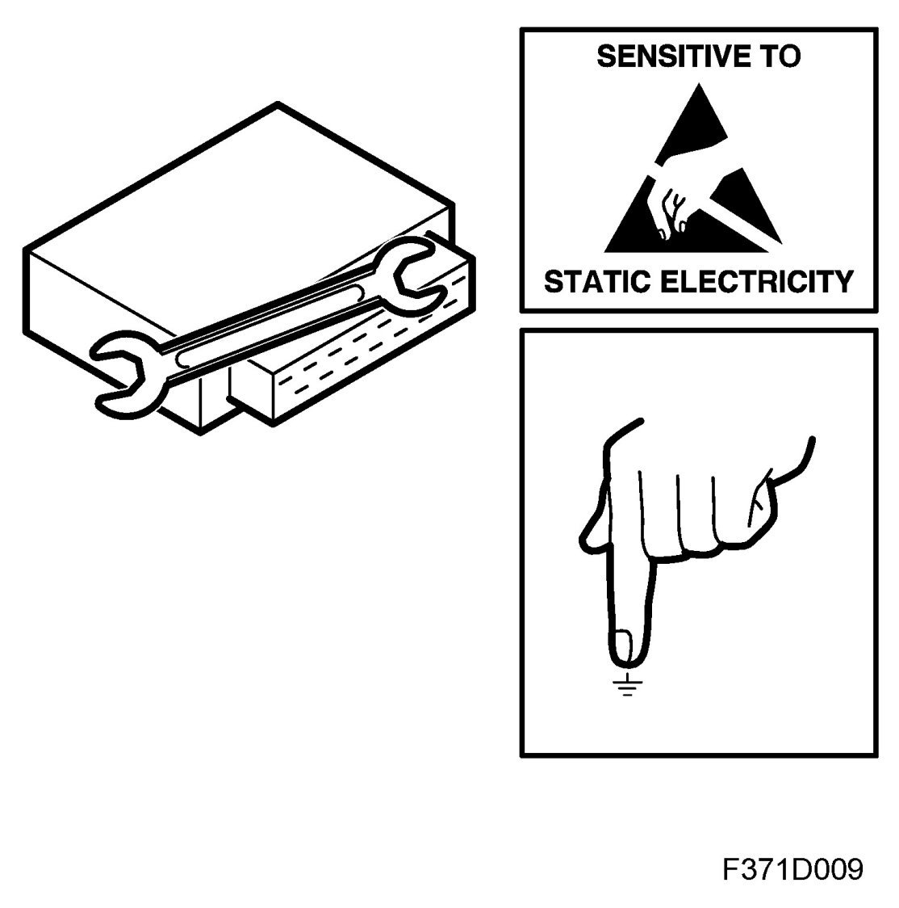

Actions When Replacing Electrical Components
Actions When Replacing Electrical Components

The components are sensitive to electrostatic discharges. In order to avoid damage to the internal circuits of components, replacement must be carried out with care in the following manner:
- Never touch the pins of the component with the hands or with clothing.
- Ground yourself by touching the engine or body of the car. Unplug the connector from the component.
- Ground yourself by touching the engine or body of the car. Plug in the connector to the component.
When the component is to be replaced
- Place the component in the return packaging without touching its pins.
- Keep the new component in its packaging for as long as possible.